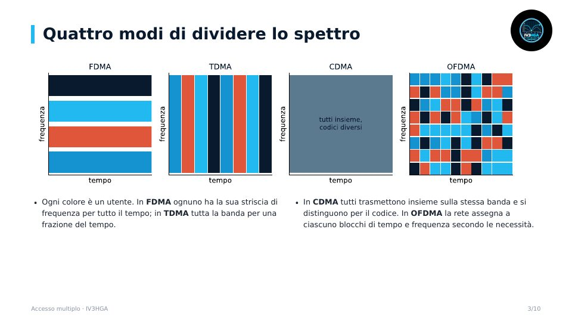

Capitolo 9 · Modulo 1
Accesso multiplo: FDMA, TDMA, CDMA
- Quattro modi di dividere lo spettro
- FDMA e TDMA con esempi reali
- CDMA: spreading, guadagno di processo, vicino-lontano
- Duplex FDD e TDD, ALOHA e CSMA
Come tanti utenti condividono lo spettro: FDMA, TDMA, CDMA, OFDMA, duplex FDD e TDD, accesso casuale.
